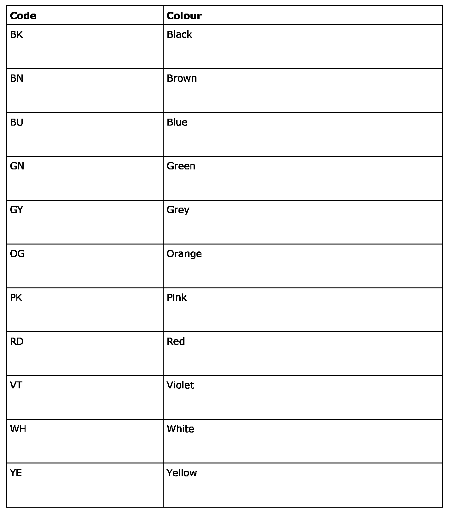

Lead Markings
Lead markings
The cables and leads are marked with a cable code consisting of three parts, e.g.:
P15-5 YE/GY 2.5
where:
The first part (P15-5) is the position number
The second part (YE/GY) is the colour code
The third part (2.5) is the cross-sectional area in mm2
Position number
Each lead is designated by a letter followed by an individual number.
The letter specifies the group to which the system belongs:
- C Comfort Systems
- D Diagnostics
- E Engine Systems
- G Gearbox Systems
- I Instrumentation Systems
- L Lighting Systems
- P Power Supply Systems
- Q Anti-Theft Alarm
- S Safety Systems
- T Telecom Systems
- V View Systems
- W Warning Systems
- X Other systems (e.g. bus)
The number is unique except for:
- 15 = +15 voltage
- 30 = +30 voltage
- 31 = ground
- 54 = +54 voltage
Leads with the same letter and number, e.g. E110, E110-1, E110-2, etc., normally belong to the same function.
Colour code
The following colour codes are used in wiring diagrams. The colour codes can also be used in combination, e.g. RD/BU, GY/WH. The cables then have at least two colour fields of each colour.

Cross-sectional area
The cross-sectional area of the conductor is specified in mm2 and determines the current the cable is capable of carrying.
Thermal stability
Cables used in the front harness and engine harness have a higher temperature resistance. When replacing the cables in these harnesses, cables with the new type of insulation must be used.
Optic fibre cable
The optical fibre cable has colour markings so that the correct fibre is used when adding equipment. The fibre cable must not be bent too hard.
Warning: The red visible light is of laser class 1. Do not look directly into the optic fibre or the control module connector at close range. At a distance of less than 20 mm from your eyes to the light source, your eyes could be damaged.